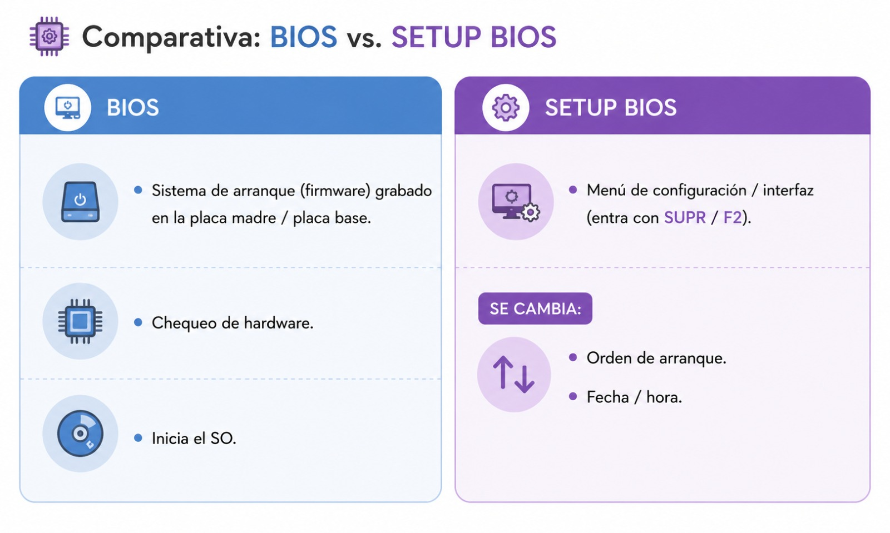
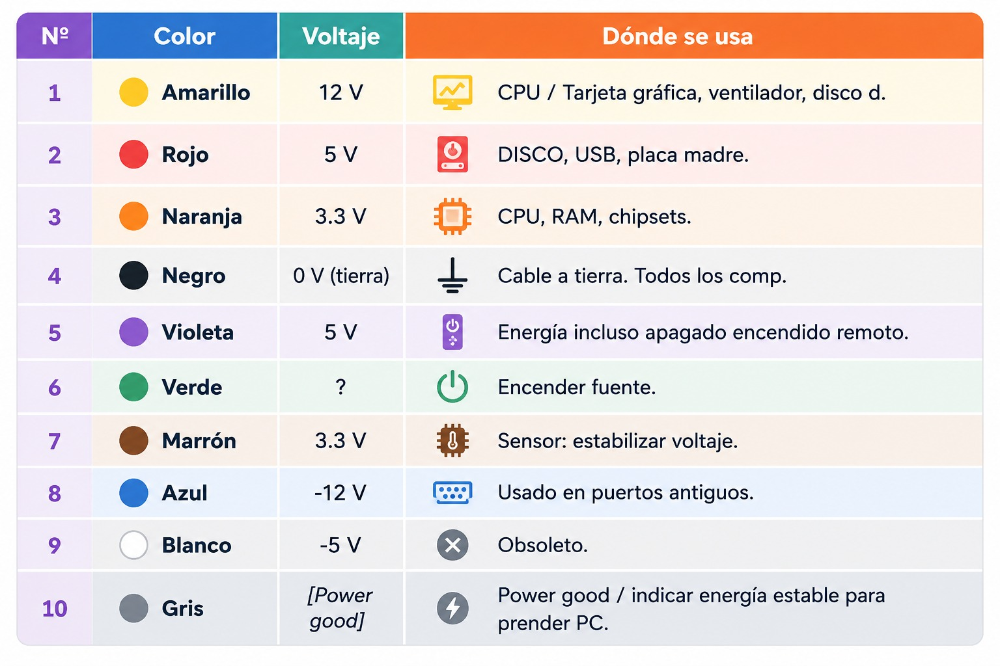
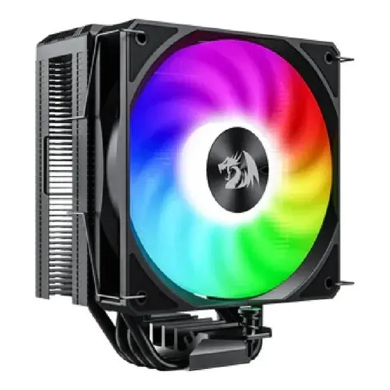

04/03 - Etapa de Diagnóstico
Esquema del microprocesador:

Comparativa BIOS vs. SETUP BIOS

Fuente de Alimentación
3 Fuente de alimentación: ? = da energía a placa madre, Disipador, HD/SSD
- Convertir CA en CC
- Distribuye energía
- (Nota al margen superior): Comunicación / Controlar tensión
Tabla de Voltajes por Color

TDP (Diseño de Potencia Térmica)
Cantidad de calor en watts generada por la CPU, donde el sistema de refrigeración debe ser capaz de disipar
